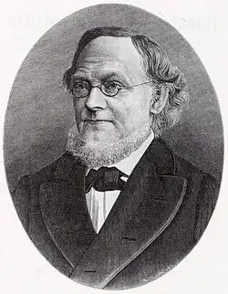
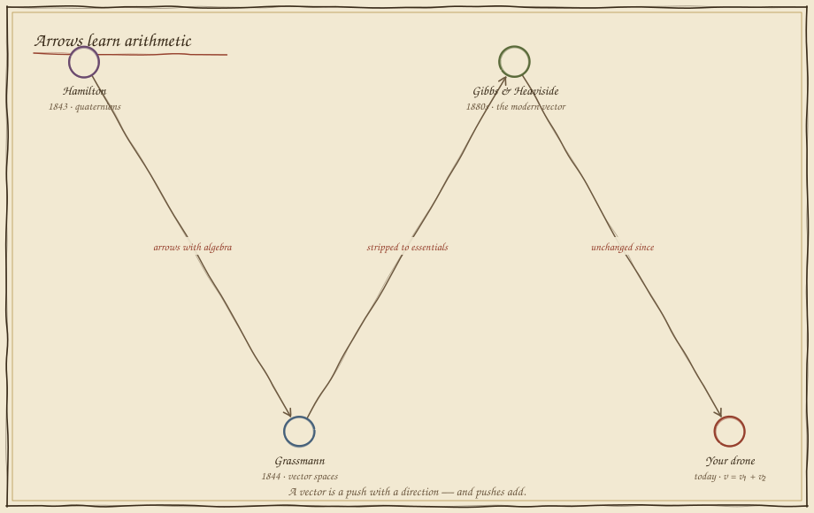
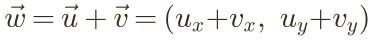
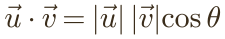

Arrows of Motion
In which a drone aims dead at its landing pad and drifts past it anyway, because the wind gets a vote — and two men taught arrows how to add.
Aim true, arrive wrong
The pad is straight ahead. You point the drone's thrust right at it and commit. But a steady crosswind is blowing, and the drone obeys both pushes at once. Set your heading and fly.
Point straight at the pad and the wind carries you east of it every time. The drone's true motion is not your thrust and not the wind — it is the two added together, tip to tail. A push with a direction is a vector, and the only way to predict the drone is to do vector arithmetic.
Arrows learn arithmetic
For centuries an arrow was a picture, not a number. Then, within a single year, two men gave arrows a full algebra — you could add them, scale them, and multiply them — and physics has spoken in vectors ever since.



Two arrows, tip to tail
Here is the entire rule. To add two vectors, walk the first, then walk the second from where you stopped; the arrow from start to finish is the sum. Drag the two arrows below — your thrust and the wind — and watch the resultant, its length, and the angle between them appear.


Aim into the wind
Now beat the crosswind for real. If you want to travel straight to the pad, your thrust must cancel the wind's sideways shove and still carry you forward — so you aim not at the pad, but upwind of it. Find the heading whose sum with the wind points dead at the target.
Watch the resultant arrow swing onto the target line as you tune the heading — the drone flies a straight path only when thrust and wind add to exactly the direction of the pad. Every boat crossing a river, every plane in a jetstream, every quadrotor in a gust solves this same vector equation, hundreds of times a second.
What you can now build
Velocities, forces, headings, the pull of every obstacle in a path planner's potential field — a robot represents them all as vectors and combines them by addition. Get this and "what will the machine actually do when three things push at once?" becomes a sum you can compute. Next, in Folio 10, we learn to turn a vector — to convert what the camera sees into where the world is — with a machine made of four numbers.
Field exercise: walk 3 steps east and 4 steps north, then have a friend walk straight from your start to your finish. They walked the vector sum — and by Folio 04's theorem, exactly 5 steps. Motion adds like arrows, always.
continue to folio 10 — the rotation machine return to the codex map